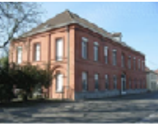
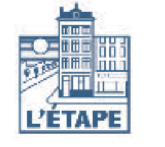
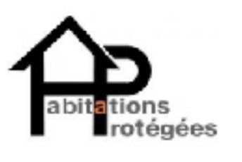

À la rue, où vais-je ?
En journée:
Il existe des lieux qui accueillent des personnes sans-abris en journée. Ces endroits offrent la possibilité de se restaurer, se réchauffer, utiliser le wifi, prendre une douche éventuellement, rencontrer des travailleurs sociaux et bénéficier de divers types d'assistance.
Abri de jour à Tournai : "Braséro"
Abri de jour à Mouscron : Resto du coeur
En soirée ou de nuit:
Pendant la nuit, les abris de nuit offrent un refuge contre le froid. Il faut généralement réserver sa place dans la journée. Les séjours peuvent varier, mais les places sont limitées, une rotation est souvent mise en place pour garantir l'accès à tous. Notez que l’Abri de Nuit est une structure d’urgence et n’a pas pour vocation de servir de solution à long terme.
Abri de nuit à Tournai : ASBL "auxiliis"
Abri de nuit à Mouscron : « Au souffle nouveau »
Logement de transit
Le logement de transit est quant à lui exclusivement destiné à l'hébergement temporaire de ménages en état de précarité ou de ménages privés de logement pour des motifs de force majeure.
Maison d'Accueil
Les Maisons d’accueil, offrent un hébergement aux personnes sans-abri pour des périodes pouvant aller de quelques jours à plusieurs mois. Ils soutiennent les résidents dans leur quête de solutions de logement plus durable.
 L'Espérance
 L'Etape
 La Consoude-Les Oliviers (CPAS de Tournai)
La Consoude-Les Oliviers (CPAS de Tournai)
 Le Relais
Retour en haut ↑